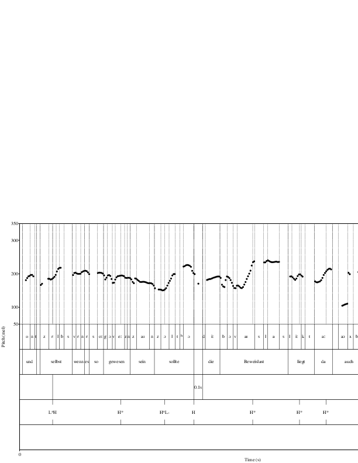

[Wenn sie Bluthochdruck haben und ihre Blutdrucktabletten absetzen, wundert sich niemand, dass der Bluthochdruck wieder da ist.][1]
[In der Adipositas, wenn sie aufhören ihre Abnehmsprizte zu nehmen, was passiert? Sie nehmen wieder zu.][2]
[Nur ein Monopolist kann es sich leisten, langfristig zu denken und wirklich neues zu wagen.] [Wobei] [Thiel mag nur eine ganz bestimmte Art von Monopol], [sagt Klöckner.][3]
[Wenn er irgendwann in Rente geht, kann er sich die möglicherweise größte Rente in der Geschichte der Menschheit auszahlen. Mehrere Milliarden Dollar, brutto und netto. Weil ja komplett steuerfrei. .][4]

[Und selbst wenn es so gewesen sein sollte:] [Die Beweislast liegt da auch bei den angreifenden Staaten.][5]
[1] Gerhard Prager, Leiter der Adipositas Ambulanz AKH Wien, Ö1 Mittagsjournal 3. März 2026, 50:40.
[2] Gerhard Prager, Leiter der Adipositas Ambulanz AKH Wien, Ö1 Mittagsjournal 3. März 2026, 51:00.
[3] Die Peter Thiel Story 2/3 19:30.
[4] Die Peter Thiel Story 2/3 24:10.
[5] Ö1 Mittagsjournal, \"Osterreichischer Rundfunk, Politologin und Iran-Expertin Diba Mirzaei, Deutsches Giga Institut, 7. M\"arz 2026, 12:08:04.